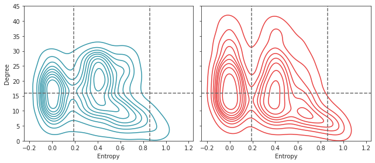

Mar ??, 2022 (overlap size: net & node)¶
Motivation:
# HIDE CODE
import os
import sys
import nibabel as nib
import networkx as nx
from time import time
from pprint import pprint
from copy import deepcopy as dc
from os.path import join as pjoin
from numpy.ma import masked_where as mwh
from scipy.ndimage import gaussian_filter
from IPython.display import display, IFrame, HTML
from matplotlib.colors import rgb2hex, to_rgb
import matplotlib.pyplot as plt
import seaborn as sns
# set style & no interpolalation
import matplotlib
matplotlib.rcParams['image.interpolation'] = 'none'
sns.set_style('whitegrid')
%matplotlib inline
# tmp & extras dir
git_dir = pjoin(os.environ['HOME'], 'Dropbox/git')
tmp_dir = pjoin(git_dir, 'jb-Ca-fMRI/tmp')
extras_dir = pjoin(git_dir, 'jb-Ca-fMRI/_extras')
lfr_dir = pjoin(os.environ['HOME'], 'Documents/workspaces/lfr/binary_overlapping')
# GitHub
sys.path.insert(0, pjoin(git_dir, '_Ca-fMRI'))
from register.atlas import make_tree_graph
from register.parcellation import Parcellation
from analysis.hierarchical import Hierarchical
from analysis.fourier import *
from analysis.bootstrap import *
from analysis.svinet import *
from analysis.group import *
from analysis.lfr import *
from utils.render import *
from utils.plotting import *
from model.mouse import Mice
from model.configuration import Config
# warnings
import warnings
warnings.filterwarnings('ignore', category=DeprecationWarning)
Fig dir¶
fig_dir = pjoin(tmp_dir, 'fig_paper')
os.makedirs(fig_dir, exist_ok=True)
Prepare¶
mice = Mice(128)
mice.setup_func_data('rest')
mako = sns.color_palette('mako', as_cmap=True)
rocket = sns.color_palette('rocket', as_cmap=True)
pal = {'ca2': mako(0.6), 'bold-lite': rocket(0.6)}
num_k, perc = 5, 10
props_base = {
'perc': f'p{perc}-sample',
'num_k': num_k,
'mice': mice,
'task': 'rest',
'metric': 'pearson',
'match_using': 'gam',
'match_metric': 'euclidean',
'graph_type': 'real',
'verbose': False,
}
props_ca = {'mode': 'ca2', **props_base}
props_bold = {'mode': 'bold-lite', **props_base}
gr_ca = Group(**props_ca).fit_group()
gr_bold = Group(**props_bold).fit_group()
remove = [
n for n, lbl in gr_ca.n2l.items()
if lbl not in gr_bold.n2l.values()
]
include = np.delete(np.arange(len(gr_ca.n2l)), remove)
sim = dist2sim(sp_dist.cdist(
XA=gr_bold.grp_pi,
XB=gr_ca.grp_pi[:, include],
metric='cosine',
))
mapping = find_best_match(sim)
ids = list(mapping.values())
gr_bold.pi = gr_bold.grp_pi
gr_ca.pi = gr_ca.grp_pi[ids]
ids
[0, 1, 2, 3, 4]
proj_bold = gr_bold.project_vec()
proj_ca = gr_ca.project_vec()
ovp, disj = gr_bold.pi_symmetry_score(decimals=5)
print(f"BOLD : : : ovp: {ovp[-1]:0.4f}, disj: {disj[-1]:0.4f}")
ovp, disj = gr_ca.pi_symmetry_score(decimals=5)
print(f"Ca2 : : : ovp: {ovp[-1]:0.4f}, disj: {disj[-1]:0.4f}")
_ = gr_ca.show(
proj_1=proj_bold,
proj_2=proj_ca,
cmaps=('magma',) * 2,
labels=('BOLD', 'CA'),
min_thres=0.15,
)
BOLD : : : ovp: 0.9943, disj: 0.9816
Ca2 : : : ovp: 0.9874, disj: 0.9494
New proportions fig¶
i, j, k = gr_bold.run_cut_prune.shape[:3]
dims = {'sub': i, 'ses': j, 'run': k}
b_grp_bold = bootstrap(
x=gr_bold.run_cut_prune,
n_resamples=int(1e4),
batch=5,
dims=dims,
est=None,
)
b_grp_bold = bn.nanmean(bn.nanmean(bn.nanmean(b_grp_bold, 3), 2), 1)
se_boot = bn.nanstd(b_grp_bold, 0, ddof=1)
df_bold = gr_bold.mk_boot_df(se_boot, gr_bold.anim_cut_prune)
b_grp_ca = bootstrap(
x=gr_ca.run_cut_prune,
n_resamples=int(1e4),
batch=5,
dims=dims,
est=None,
)
b_grp_ca = bn.nanmean(bn.nanmean(bn.nanmean(b_grp_ca, 3), 2), 1)
se_boot = bn.nanstd(b_grp_ca, 0, ddof=1)
df_ca = gr_ca.mk_boot_df(se_boot, gr_ca.anim_cut_prune)
mice.cfg.ll = 3
pi_srf = gr_ca.get_surface_pi(gr_ca.grp_pi)
proj = gr_ca.project_vec(pi_srf, layer=0, add_disjoint=False)
tr_ca = gr_ca.trim2d(proj)
pi_srf = gr_bold.get_surface_pi(gr_bold.grp_pi)
proj = gr_bold.project_vec(pi_srf, layer=0, add_disjoint=False)
tr_bold = gr_bold.trim2d(proj)
fig, axes, axes_inset = plot_proportions(df_ca, df_bold, figsize_x=15, figsize_y=6.1)
for oc, ax in enumerate(axes[0], start=1):
ax.set_title(f'OC-{oc}', fontsize=20, y=1.03)
name = f'props'
figname = f"{name}.pdf"
fig.savefig(pjoin(fig_dir, figname), bbox_inches='tight')
for dpi in [100, 300, 600]:
figname = f"{name}_dpi{dpi}.png"
fig.savefig(pjoin(fig_dir, figname), dpi=dpi, bbox_inches='tight')
fig, axes, axes_inset = plot_proportions(
df_ca=df_ca,
df_bold=df_bold,
inset_ca=tr_ca,
inset_bold=tr_bold,
figsize_y=6.1,
figsize_x=15,
)
for oc, ax in enumerate(axes[0], start=1):
ax.set_title(f'OC-{oc}', fontsize=20, y=1.03)
name = f'props-inset'
figname = f"{name}.pdf"
fig.savefig(pjoin(fig_dir, figname), bbox_inches='tight')
for dpi in [100, 300, 600]:
figname = f"{name}_dpi{dpi}.png"
fig.savefig(pjoin(fig_dir, figname), dpi=dpi, bbox_inches='tight')
fig
fig_kws = {
'transparent': True,
'bbox_inches': 'tight',
}
vmin, vmax = 0.15, 0.75
for i in range(5):
fig, ax = create_figure(figsize=(1.5, 1))
x2p = mwh(tr_bold['top'] == 0, tr_ca['top'])
ax.imshow(x2p, cmap='Greys_r')
x2p = mwh(tr_bold['proj-top'][i] < 0.15, tr_bold['proj-top'][i])
ax.imshow(x2p, cmap='magma', vmin=vmin, vmax=vmax)
remove_ticks(ax)
name = f'OC-{i+1}_bold'
# figname = f"{name}.pdf"
# fig.savefig(pjoin(fig_dir, figname), bbox_inches='tight')
for dpi in [1000]:
figname = f"{name}_dpi{dpi}.png"
fig.savefig(pjoin(fig_dir, figname), dpi=dpi, **fig_kws)
plt.close()
fig, ax = create_figure(figsize=(1.5, 1))
x2p = mwh(tr_ca['top'] == 0, tr_ca['top'])
ax.imshow(x2p, cmap='Greys_r')
x2p = mwh(tr_ca['proj-top'][i] < 0.15, tr_ca['proj-top'][i])
ax.imshow(x2p, cmap='magma', vmin=vmin, vmax=vmax)
remove_ticks(ax)
name = f'OC-{i+1}_ca'
# figname = f"{name}.pdf"
# fig.savefig(pjoin(fig_dir, figname), bbox_inches='tight')
for dpi in [1000]:
figname = f"{name}_dpi{dpi}.png"
fig.savefig(pjoin(fig_dir, figname), dpi=dpi, **fig_kws)
plt.close()
fig, axes, axes_inset = plot_proportions(
df_ca=df_ca,
df_bold=df_bold,
inset_ca=tr_ca,
inset_bold=tr_bold,
horizontal=False,
figsize_x=13,
figsize_y=6,
)
name = f'props-vert'
figname = f"{name}.pdf"
fig.savefig(pjoin(fig_dir, figname), bbox_inches='tight')
for dpi in [100, 300, 600]:
figname = f"{name}_dpi{dpi}.png"
fig.savefig(pjoin(fig_dir, figname), dpi=dpi, bbox_inches='tight')
Count num ovp per comm¶
i, j, k = 7, 0, 0
x = gr_ca.run_pi_prune[i, j, k] > 0.2
ovp_nodes = x.sum(0) > 1
portion_ovp = (ovp_nodes * x).sum(1) / x.sum(1)
portion_ovp
array([0.5952381 , 0.4893617 , 0.60606061, 0.63461538, 0.43902439])
x = gr_ca.run_pi_prune > 0.2
ovp_nodes = x.sum(-2, keepdims=True) > 1
portion_ovp = (ovp_nodes * x).sum(-1) / x.sum(-1)
portion_ovp_avg = bn.nanmean(bn.nanmean(bn.nanmean(portion_ovp, 2), 1), 0)
portion_ovp.shape, portion_ovp_avg.shape
((10, 3, 4, 5), (5,))
portion_ovp[i, j, k]
array([0.5952381 , 0.4893617 , 0.60606061, 0.63461538, 0.43902439])
portion_ovp_avg
array([0.44172266, 0.51655197, 0.56084204, 0.63401297, 0.57507811])
x = gr_bold.run_pi_prune > 0.2
ovp_nodes = x.sum(-2, keepdims=True) > 1
portion_ovp = (ovp_nodes * x).sum(-1) / x.sum(-1)
portion_ovp_avg = bn.nanmean(bn.nanmean(bn.nanmean(portion_ovp, 2), 1), 0)
portion_ovp_avg
array([0.42189855, 0.39807471, 0.34358818, 0.5851225 , 0.69344499])
Detect overlapping nodes¶
x = gr_ca.run_pi_prune > 0.2
ovp_nodes = x.sum(-2, keepdims=True) > 1
ovp_nodes = ovp_nodes * x
ovp_nodes_avg = ovp_nodes.mean(2).mean(1).mean(0)
ovp_nodes.shape, ovp_nodes_avg.shape
((10, 3, 4, 5, 174), (5, 174))
proj = gr_ca.project_vec(ovp_nodes_avg, layer=0, add_disjoint=False)
tr = gr_ca.trim2d(proj)
fig, axes = create_figure(2, 5, (13, 4))
x2p = mwh(tr['top'] == 0, tr['top'])
for ax in axes.flat:
ax.imshow(x2p, cmap='bone')
for k in range(5):
ax = axes[0, k]
x2p = mwh(tr['top'] == 0, tr['proj-top'][k])
ax.imshow(x2p, cmap='nipy_spectral', vmin=0, vmax=0.725)
ax = axes[1, k]
x2p = mwh(tr['proj-top'][k] < 0.3, tr['proj-top'][k])
cmap = gr_ca.cmaps[k + 1]# 'YlOrRd_r'
ax.imshow(x2p, cmap=cmap, vmin=0, vmax=0.725)
remove_ticks(axes)
x = gr_ca.anim_pi_prune > 0.2
ovp_nodes = x.sum(-2, keepdims=True) > 1
ovp_nodes = ovp_nodes * x
ovp_nodes_avg = ovp_nodes.mean(0)
ovp_nodes.shape, ovp_nodes_avg.shape
((10, 5, 174), (5, 174))
proj = gr_ca.project_vec(ovp_nodes_avg, layer=0, add_disjoint=False)
tr = gr_ca.trim2d(proj)
fig, axes = create_figure(2, 5, (13, 4))
x2p = mwh(tr['top'] == 0, tr['top'])
for ax in axes.flat:
ax.imshow(x2p, cmap='Greys_r')
for k in range(5):
ax = axes[0, k]
x2p = mwh(tr['proj-top'][k] < 0.1, tr['proj-top'][k])
ax.imshow(x2p, cmap='Spectral_r', vmin=0, vmax=1)
ax = axes[1, k]
x2p = tr['proj-top'][k] > 0.7
x2p = mwh(~x2p, x2p)
cmap = gr_ca.cmaps[k + 1]# 'YlOrRd_r'
ax.imshow(x2p, cmap=cmap, vmin=0)
remove_ticks(axes)
Pacman figure¶
thres = 0.2
x = gr_ca.run_pi_prune > thres
ovp_nodes = x.sum(-2, keepdims=True) > 1
portion_ovp_ca = (ovp_nodes * x).sum(-1) / x.sum(-1) * 100
portion_ovp_ca_avg = bn.nanmean(bn.nanmean(bn.nanmean(portion_ovp_ca, 2), 1), 0)
x = gr_bold.run_pi_prune > thres
ovp_nodes = x.sum(-2, keepdims=True) > 1
portion_ovp_bold = (ovp_nodes * x).sum(-1) / x.sum(-1) * 100
portion_ovp_bold_avg = bn.nanmean(bn.nanmean(bn.nanmean(portion_ovp_bold, 2), 1), 0)
portion_ovp_ca_avg, portion_ovp_bold_avg
( array([44.17226617, 51.65519665, 56.08420407, 63.40129688, 57.50781136]), array([42.1898547 , 39.80747099, 34.3588183 , 58.51224957, 69.34449917]) )
i, j, k = portion_ovp_bold.shape[:3]
dims = {'sub': i, 'ses': j, 'run': k}
boot = bootstrap(
x=portion_ovp_bold,
n_resamples=int(1e5),
batch=5,
dims=dims,
est=None,
)
boot = bn.nanmean(bn.nanmean(bn.nanmean(boot, 3), 2), 1)
se_bold = bn.nanstd(boot, 0, ddof=1)
boot = bootstrap(
x=portion_ovp_ca,
n_resamples=int(1e5),
batch=5,
dims=dims,
est=None,
)
boot = bn.nanmean(bn.nanmean(bn.nanmean(boot, 3), 2), 1)
se_ca = bn.nanstd(boot, 0, ddof=1)
se_bold, se_ca
( array([2.75978431, 3.21204618, 2.79657918, 3.80576814, 3.9218194 ]), array([4.55630126, 3.07430441, 3.50130146, 2.93460169, 3.42400255]) )
ci, dof = 0.95, 9
whis = np.round((1 + ci) / 2, 5)
t = sp_stats.t.ppf(whis, dof)
e_bold, e_ca = se_bold * t, se_ca * t
e_bold, e_ca
( array([6.24306585, 7.26615327, 6.32630163, 8.60924566, 8.87177186]), array([10.30706953, 6.95455975, 7.92049418, 6.63853023, 7.74563189]) )
grey = list(sns.color_palette('deep'))[-3]
fig, axes = create_figure(2, 5, (13.5, 4))
for k in range(5):
ax = axes[0, k]
x = [100 - portion_ovp_bold_avg[k] - e_bold[k], e_bold[k], e_bold[k], portion_ovp_bold_avg[k] - e_bold[k]]
patches, _, autotexts = ax.pie(
x=x,
# labels=['Disjoint', 'Mixed'],
explode=(0,) * len(x),
autopct='%1.0f%%',
shadow=False,
startangle=270,
labeldistance=1.2,
colors=[grey] * 2 + [gr_bold.colors[k + 1]] * 2,
wedgeprops = {'linewidth': 0.5},
textprops={'fontsize': 16},
)
for i, t in enumerate(autotexts):
t.set_color('white')
if i == 0:
t.set_text(f"{sum(x[:2]):0.0f}%")
if k == 4:
t.set_fontsize(15)
elif i in [1, 2]:
t.set_text('')
patches[i].set_alpha(0.6)
else:
t.set_text(f"{sum(x[2:]):0.0f}%")
t.set_fontsize(17)
if k in [1, 2]:
t.set_color('k')
t.set_alpha(0.7)
ax.axis('equal')
ax = axes[1, k]
x = [100 - portion_ovp_ca_avg[k] - e_ca[k], e_ca[k], e_ca[k], portion_ovp_ca_avg[k] - e_ca[k]]
patches, _, autotexts = ax.pie(
x=x,
# labels=['Disjoint', 'Mixed'],
explode=(0,) * len(x),
autopct='%1.0f%%',
shadow=False,
startangle=270,
labeldistance=1.2,
colors=[grey] * 2 + [gr_ca.colors[k + 1]] * 2,
wedgeprops = {'linewidth': 0.5},
textprops={'fontsize': 16},
)
for i, t in enumerate(autotexts):
t.set_color('white')
if i == 0:
t.set_text(f"{sum(x[:2]):0.0f}%")
elif i in [1, 2]:
t.set_text('')
patches[i].set_alpha(0.6)
else:
t.set_text(f"{sum(x[2:]):0.0f}%")
t.set_fontsize(17)
if k in [1, 2]:
t.set_color('k')
t.set_alpha(0.7)
ax.axis('equal')
name = f'pie_thres{thres:.2f}'
figname = f"{name}.pdf"
fig.savefig(pjoin(fig_dir, figname), bbox_inches='tight')
for dpi in [100, 300, 600]:
figname = f"{name}_dpi{dpi}.png"
fig.savefig(pjoin(fig_dir, figname), dpi=dpi, bbox_inches='tight')
plt.show()
plt.show()
# bins = np.linspace(0.2, 1.0, 5) # np.linspace(0.15, 1.0, 18)
bins = [0.15, 0.30, 0.45, 0.60, 0.75, 1.0]
cutted_ca = cut_data(
data=gr_ca.run_pi_prune.reshape(-1, 5, 174),
bins=bins,
decimals=4,
oc_only=True,
)[0].reshape(10, 3, 4, 5, len(bins) - 1)
cutted_bold = cut_data(
data=gr_bold.run_pi_prune.reshape(-1, 5, 174),
bins=bins,
decimals=4,
oc_only=True,
)[0].reshape(10, 3, 4, 5, len(bins) - 1)
cutted_ca_avg = bn.nanmean(bn.nanmean(bn.nanmean(cutted_ca, 2), 1), 0)
cutted_bold_avg = bn.nanmean(bn.nanmean(bn.nanmean(cutted_bold, 2), 1), 0)
fig, axes = create_figure(1, 2, (8, 3.5), 'all', 'all')
axes[0].plot(cutted_bold_avg.T)
axes[1].plot(cutted_ca_avg.T)
add_grid(axes)
plt.show()
slope, intercept, r, p, se = sp_stats.linregress(100 - portion_ovp_bold_avg, cutted_bold_avg[:, -1])
slope, intercept, r, p, se
( 1.0201606951442719, 3.2949491644975453, 0.9990314292773548, 3.617993286195647e-05, 0.025942049768603804 )
slope, intercept, r, p, se = sp_stats.linregress(100 - portion_ovp_ca_avg, cutted_ca_avg[:, -1])
slope, intercept, r, p, se
( 0.9483713479099273, 6.764230872396475, 0.980452037101275, 0.003271211108781187, 0.10988144491573247 )
sns.regplot(x=100 - portion_ovp_bold_avg, y=cutted_bold_avg[:, -1], color=pal['bold-lite'])
sns.regplot(x=100 - portion_ovp_ca_avg, y=cutted_ca_avg[:, -1], color=pal['ca2'])
<AxesSubplot:>
x_bold = 100 - portion_ovp_bold.ravel()
y_bold = cutted_bold[..., -1].ravel()
good_bold = np.logical_and(np.isfinite(x_bold), np.isfinite(y_bold))
slope, intercept, r, p, se = sp_stats.linregress(x_bold[good_bold], y_bold[good_bold])
slope, intercept, r, p, se
( 0.9844746026424067, 4.829362643545366, 0.9784215959435011, 0.0, 0.008723151223717739 )
x_ca = 100 - portion_ovp_ca.ravel()
y_ca = cutted_ca[..., -1].ravel()
good_ca = np.logical_and(np.isfinite(x_ca), np.isfinite(y_ca))
slope, intercept, r, p, se = sp_stats.linregress(x_ca[good_ca], y_ca[good_ca])
slope, intercept, r, p, se
( 0.985717251828234, 5.401776907635906, 0.9545875796587282, 2.073651339363e-311, 0.01268711297220194 )
fig, ax = create_figure()
sns.regplot(x=x_bold[good_bold], y=y_bold[good_bold], color=pal['bold-lite'], scatter_kws={'alpha': 0.2}, ax=ax)
sns.regplot(x=x_ca[good_ca], y=y_ca[good_ca], color=pal['ca2'], scatter_kws={'alpha': 0.2}, ax=ax)
ax.set_aspect('equal')
ax.grid()
plt.show()
thres = 0.2
x = gr_ca.run_pi_prune > thres
x.shape
(10, 3, 4, 5, 174)
c_nodes = x.sum(-2).astype(float)
ovp = c_nodes > 1
disj = c_nodes == 1
c_nodes.shape
(10, 3, 4, 174)
ovp_sz_net = np.zeros(gr_ca.run_pi_prune.shape[:-1])
looper = itertools.product(range(10), range(3), range(4))
for i, j, k in looper:
o = ovp[i, j, k]
d = disj[i, j, k]
ovp_sz_net[i, j, k] = x[i, j, k][:, o].sum(1)
ovp_sz_net[i, j, k] *= 100 / (x[i, j, k][:, o].sum(1) + x[i, j, k][:, d].sum(1))
ovp_sz_net.shape
(10, 3, 4, 5)
ovp_sz_net_avg = bn.nanmean(bn.nanmean(bn.nanmean(ovp_sz_net, 2), 1), 0)
np.round(ovp_sz_net_avg, 1)
array([44.2, 51.7, 56.1, 63.4, 57.5])
Entropy with log(k) / log(5)¶
fig, axes = create_figure(1, 4, (13, 3))
sns.histplot(gr_ca.run_h[np.isfinite(gr_ca.run_h)], color=pal['ca2'], ax=axes[0])
sns.histplot(gr_bold.run_h[np.isfinite(gr_bold.run_h)], color=pal['bold-lite'], ax=axes[0])
axes[0].set_title('Entropy (run)')
sns.histplot(gr_ca.run_h[np.isfinite(gr_ca.run_h)], stat='proportion', color=pal['ca2'], ax=axes[1])
sns.histplot(gr_bold.run_h[np.isfinite(gr_bold.run_h)], stat='proportion', color=pal['bold-lite'], ax=axes[1])
axes[1].set_title('Entropy (run; log)')
axes[1].set_yscale('log')
sns.histplot(gr_ca.run_h[gr_ca.run_h.nonzero()], color=pal['ca2'], ax=axes[2])
sns.histplot(gr_bold.run_h[gr_bold.run_h.nonzero()], color=pal['bold-lite'], ax=axes[2])
axes[2].set_title('Entropy (run; nonzero)')
sns.histplot(gr_ca.run_deg[np.isfinite(gr_ca.run_deg)],
bins=np.linspace(0.5, 70.5, 71), color=pal['ca2'], ax=axes[3])
sns.histplot(gr_bold.run_deg[np.isfinite(gr_bold.run_deg)],
bins=np.linspace(0.5, 70.5, 71), color=pal['bold-lite'], ax=axes[3])
axes[3].set_title('Degree (run)')
plt.show()
np.log(2) / np.log(5), np.log(3) / np.log(5), np.log(4) / np.log(5)
(0.43067655807339306, 0.6826061944859854, 0.8613531161467861)
(0.15 * np.log(1 / 0.15) + 0.85 * np.log(1 / 0.85)) / np.log(5)
0.26264392340968856
fig, ax = create_figure(figsize=(13, 5))
for i in range(5):
ax.axvline(np.log(i) / np.log(5), color='dimgrey', ls='--')
x = (0.15 * np.log(1 / 0.15) + 0.85 * np.log(1 / 0.85)) / np.log(5)
ax.axvline(x, color='magenta', ls='-.')
sns.histplot(gr_ca.run_h[np.isfinite(gr_ca.run_h)],
stat='proportion', bins=np.linspace(0.0, 1.0, 51),
color=pal['ca2'], ax=ax)
sns.histplot(gr_bold.run_h[np.isfinite(gr_bold.run_h)],
stat='proportion', bins=np.linspace(0.0, 1.0, 51),
color=pal['bold-lite'], ax=ax)
# ax.set_title('Entropy (run; log)')
ax.set_yscale('log')
num = 100
bins = np.linspace(-1 / num, 1.0, num + 2)
xs = (bins[1:] + bins[:-1]) / 2
xs[0] = 0
i, j, k = gr_bold.run_h.shape[:3]
dims = {'sub': i, 'ses': j, 'run': k}
h_bold = cut_data(
data=gr_bold.run_h.reshape(-1, 1, 174),
bins=bins,
oc_only=True,
)[0].reshape(i, j, k, -1)
h_bold_avg = bn.nanmean(bn.nanmean(bn.nanmean(h_bold, 2), 1), 0)
boot = bootstrap(
x=h_bold,
n_resamples=int(1e4),
batch=5,
dims=dims,
est=None,
)
boot = bn.nanmean(bn.nanmean(bn.nanmean(boot, 3), 2), 1)
se_bold = bn.nanstd(boot, 0, ddof=1)
h_ca = cut_data(
data=gr_ca.run_h.reshape(-1, 1, 174),
bins=bins,
oc_only=True,
)[0].reshape(i, j, k, -1)
h_ca_avg = bn.nanmean(bn.nanmean(bn.nanmean(h_ca, 2), 1), 0)
boot = bootstrap(
x=h_ca,
n_resamples=int(1e4),
batch=5,
dims=dims,
est=None,
)
boot = bn.nanmean(bn.nanmean(bn.nanmean(boot, 3), 2), 1)
se_ca = bn.nanstd(boot, 0, ddof=1)
ci, dof = 0.95, 9
whis = np.round((1 + ci) / 2, 5)
t = sp_stats.t.ppf(whis, dof)
from matplotlib.pyplot import text as mp_txt
fig, axes = create_figure(2, 1, figsize=(8, 6), sharex='col')
ax = axes[0]
for y, color in zip([h_bold_avg, h_ca_avg], [pal['bold-lite'], pal['ca2']]):
lo = y - se_ca * t
hi = y + se_ca * t
ax.plot(xs, y, color=color, lw=1.8)
ax.plot(xs, lo, color=color, lw=1., alpha=0.1)
ax.plot(xs, hi, color=color, lw=1., alpha=0.1)
ax.fill_between(xs, lo, hi, color=color, alpha=0.2)
ax.set_ylabel('Proportion [%]', fontsize=17)
ax.set_yscale('log')
ax.grid(axis='y')
ax = axes[1]
ax.plot(xs, np.cumsum(h_bold_avg), lw=1.8, color=pal['bold-lite'])
ax.plot(xs, np.cumsum(h_ca_avg), lw=1.8, color=pal['ca2'])
ax.set_ylabel('Cumulative [%]', fontsize=17)
for ax in axes.flat:
for i in range(1, 5):
x = np.log(i) / np.log(5)
ax.axvline(x, color='dimgrey', ls='--', lw=1.2)
mp_txt(
x=x + 0.005,
y=100 if i == 1 else 64,
s=f"$\log({i}) \,\,/\,\, \log(5)$",
fontsize=12,
rotation=270,
va='top',
)
x = (0.15 * np.log(1 / 0.15) + 0.85 * np.log(1 / 0.85)) / np.log(5)
ax.axvline(x, color='magenta', ls='-.', lw=1.5)
sp_stats.entropy([0.85] + [0.15 / 4] * 4) / np.log(5)
0.3918468908317064
sp_stats.entropy([0.85] + [0.15]) / np.log(5)
0.26264392340968856
np.concatenate([h_bold_avg.reshape(1, -1), h_ca_avg.reshape(1, -1)]).mean(0)
array([3.25239071e+01, 7.38333451e-03, 4.55953510e-01, 7.57388666e-01, 6.91508912e-01, 6.49017076e-01, 7.53597611e-01, 8.12316839e-01, 8.42788590e-01, 8.27340793e-01, 7.98925238e-01, 8.45653259e-01, 7.99994490e-01, 7.35221304e-01, 7.58445884e-01, 8.42560900e-01, 8.56921708e-01, 7.64284655e-01, 1.01967561e+00, 9.38929038e-01, 7.42892562e-01, 9.25568934e-01, 8.10051726e-01, 7.99350957e-01, 1.01670332e+00, 8.69840428e-01, 9.52052258e-01, 9.64150039e-01, 8.14159560e-01, 1.11637113e+00, 9.70656947e-01, 9.46581667e-01, 9.48862611e-01, 1.06332127e+00, 1.23676486e+00, 1.13464306e+00, 1.22293352e+00, 1.25192642e+00, 1.43737630e+00, 1.52369130e+00, 1.66909326e+00, 1.95452198e+00, 2.36625195e+00, 4.47710326e+00, 1.19644474e+00, 6.38044288e-01, 6.54322892e-01, 6.86935158e-01, 6.07077618e-01, 6.94150209e-01, 6.43517068e-01, 7.18781929e-01, 6.03213492e-01, 6.12598964e-01, 6.78196514e-01, 6.02035772e-01, 5.53906204e-01, 5.55666618e-01, 6.52238387e-01, 5.64028656e-01, 5.67126554e-01, 6.50397447e-01, 6.10566087e-01, 6.16275329e-01, 6.59633119e-01, 6.93455909e-01, 6.52903881e-01, 7.29418314e-01, 7.32596856e-01, 3.67265106e-01, 1.98744523e-01, 2.07391386e-01, 1.76625173e-01, 2.00968278e-01, 1.77867638e-01, 1.88407355e-01, 2.24040606e-01, 2.10934997e-01, 2.10466093e-01, 1.70601896e-01, 1.89598476e-01, 1.88291432e-01, 2.14333658e-01, 2.29426828e-01, 2.00045606e-01, 2.42726893e-01, 2.18670677e-01, 1.06727111e-01, 7.84333400e-02, 8.42090316e-02, 6.35560896e-02, 9.88523795e-02, 7.94015993e-02, 1.12924319e-01, 9.42703478e-02, 1.21318557e-01, 1.23569595e-01, 1.58380922e-01, 1.85244375e-01, 1.96870869e-01, 2.09619061e-01])
plt.plot(np.cumsum(h_bold_avg))
plt.plot(h_bold_avg)
[<matplotlib.lines.Line2D object at 0x7f2f6b745b20>]
plt.plot(np.cumsum(h_ca_avg))
plt.plot(np.cumsum(h_bold_avg))
[<matplotlib.lines.Line2D object at 0x7f2f6baff700>]
bins
array([-0.02, 0. , 0.02, 0.04, 0.06, 0.08, 0.1 , 0.12, 0.14, 0.16, 0.18, 0.2 , 0.22, 0.24, 0.26, 0.28, 0.3 , 0.32, 0.34, 0.36, 0.38, 0.4 , 0.42, 0.44, 0.46, 0.48, 0.5 , 0.52, 0.54, 0.56, 0.58, 0.6 , 0.62, 0.64, 0.66, 0.68, 0.7 , 0.72, 0.74, 0.76, 0.78, 0.8 , 0.82, 0.84, 0.86, 0.88, 0.9 , 0.92, 0.94, 0.96, 0.98, 1. ])
np.log(0)
-inf
len(gr_ca.run_h.flat), len(gr_ca.run_deg.flat)
(20880, 20880)
len(gr_bold.run_h.flat), len(gr_bold.run_deg.flat)
(20880, 20880)
num = len(gr_ca.run_h.flat)
df = pd.DataFrame({
'mode': ['ca2'] * num + ['bold-lite'] * num,
'Degree': list(gr_ca.run_deg.flat) + list(gr_bold.run_deg.flat),
'Entropy': list(gr_ca.run_h.flat) + list(gr_bold.run_h.flat),
})
df
| mode | Degree | Entropy | |
|---|---|---|---|
| 0 | ca2 | NaN | NaN |
| 1 | ca2 | NaN | NaN |
| 2 | ca2 | NaN | NaN |
| 3 | ca2 | NaN | NaN |
| 4 | ca2 | NaN | NaN |
| ... | ... | ... | ... |
| 41755 | bold-lite | 8.0 | 0.000000 |
| 41756 | bold-lite | 25.0 | 0.000000 |
| 41757 | bold-lite | 5.0 | 0.000000 |
| 41758 | bold-lite | 4.0 | 0.242585 |
| 41759 | bold-lite | 5.0 | 0.000000 |
41760 rows × 3 columns
41760 / num
2.0
sns.kdeplot(
data=df,
x='Entropy',
y='Degree',
hue='mode',
palette=pal,
)
<AxesSubplot:xlabel='Entropy', ylabel='Degree'>
ylim_max = 60
fig, axes = create_figure(1, 2, (9, 4), 'all', 'all')
for ax, (mode, c) in zip(axes.flat, pal.items()):
sns.kdeplot(
data=df.loc[df['mode'] == mode],
x='Entropy',
y='Degree',
color=c,
ax=ax,
)
ylim = ax.get_ylim()
ax.set_ylim((ylim[0], ylim_max))
plt.show()
-2022_112_0.png)
Full df¶
affil, affil_included = gr_ca.node_affiliations()
dlist = []
looper = itertools.product(range(10), range(3), range(4))
for i, j, k in looper:
if np.isnan(gr_ca.run_h[i, j, k]).sum() < len(gr_ca.n2l):
dlist.append({
'mode': ['ca2'] * len(affil_included),
'subject': [i + 1] * len(affil_included),
'session': [j + 1] * len(affil_included),
'run': [k + 1] * len(affil_included),
'Affiliation': affil_included,
'Entropy': gr_ca.run_h[i, j, k],
'Degree': gr_ca.run_deg[i, j, k],
})
if np.isnan(gr_bold.run_h[i, j, k]).sum() < len(gr_bold.n2l):
dlist.append({
'mode': ['bold-lite'] * len(affil_included),
'subject': [i + 1] * len(affil_included),
'session': [j + 1] * len(affil_included),
'run': [k + 1] * len(affil_included),
'Affiliation': affil_included,
'Entropy': gr_bold.run_h[i, j, k],
'Degree': gr_bold.run_deg[i, j, k],
})
df = pd.DataFrame(merge_dicts(dlist))
df.shape
(40368, 7)
sp_stats.entropy([0.15, 0.85, 0, 0, 0]) / np.log(5), sp_stats.entropy([0.2, 0.8, 0, 0, 0]) / np.log(5)
(0.26264392340968856, 0.31091750708257115)
vlines = [0.25, 0.52]
hlines = [15]
fig, axes = create_figure(1, 2, (9, 4), 'all', 'all')
for ax, (mode, c) in zip(axes.flat, pal.items()):
for x in vlines:
ax.axvline(x, color='dimgrey', ls='--')
for y in hlines:
ax.axhline(y, color='dimgrey', ls='--')
sns.kdeplot(
data=df.loc[df['mode'] == mode],
x='Entropy',
y='Degree',
color=c,
ax=ax,
)
ax.set_ylim((0, 60))
plt.show()
-2022_120_0.png)
selected = ['Prefrontal', 'Somatomotor', 'Visual', 'Medial']
fig, axes = create_figure(2, len(selected), (13, 7), 'all', 'all')
for ax in axes.flat:
for x in vlines:
ax.axvline(x, color='k', ls='--', lw=0.8)
for y in hlines:
ax.axhline(y, color='k', ls='--', lw=0.8)
for i, af in enumerate(selected):
for ax, (mode, c) in zip(axes[:, i].flat, pal.items()):
_df = df.loc[
(df['mode'] == mode) &
(df['Affiliation'] == af)
]
sns.scatterplot(
data=df.loc[df['mode'] == mode],
x='Entropy',
y='Degree',
color='dimgrey',
s=20,
alpha=0.01,
ax=ax,
)
sns.kdeplot(
data=_df,
x='Entropy',
y='Degree',
color=affil['colors'][af],
ax=ax,
)
if mode == 'ca2':
ax.set_title(af, fontsize=18, y=1.02)
else:
ax.set_xlabel('Entropy', fontsize=15, labelpad=20)
if i == len(selected) - 1:
axtw = ax.twinx()
axtw.set_ylabel(mode, fontsize=20, labelpad=30, rotation=-90)
axtw.set_yticks([])
elif i == 0:
ax.set_ylabel('Degree', fontsize=15, labelpad=20)
ax.set_ylim((0, 60))
ax.set_xlim((-0.2, 1.1))
plt.show()
-2022_121_0.png)
vedges = [0] + vlines + [1]
hedges = [0] + hlines + [100]
coordinates = {}
for i in range(len(hedges) - 1):
for j in range(len(vedges) - 1):
coordinates[f"{i}{j}"] = (
(hedges[i], hedges[i + 1]),
(vedges[j], vedges[j + 1]),
)
coordinates
{ '00': ((0, 15), (0, 0.25)), '01': ((0, 15), (0.25, 0.52)), '02': ((0, 15), (0.52, 1)), '10': ((15, 100), (0, 0.25)), '11': ((15, 100), (0.25, 0.52)), '12': ((15, 100), (0.52, 1)) }
carto_map = {}
for k, bounds in coordinates.items():
(lower_deg, upper_deg), (lower_h, upper_h) = bounds
cond_h = np.logical_and(lower_h <= gr_ca.run_h, gr_ca.run_h < upper_h)
cond_deg = np.logical_and(lower_deg <= gr_ca.run_deg, gr_ca.run_deg < upper_deg)
cond = np.logical_and(cond_h, cond_deg)
carto_map[k] = bn.nanmean(bn.nanmean(bn.nanmean(cond, 2), 1), 0)
carto_vec = [np.expand_dims(e, axis=0) for e in carto_map.values()]
carto_vec = np.concatenate(carto_vec)
proj = gr_ca.project_vec(carto_vec, add_disjoint=False)
tr = gr_ca.trim2d(proj)
fig, axes = create_figure(2, 3, (8, 5))
for i, k in enumerate(coordinates):
ax = axes.flat[i]
x2p = mwh(tr['top'] == 0, tr['proj-top'][i])
ax.imshow(x2p, cmap='RdBu_r')
ax.set_title(k)
remove_ticks(axes)
carto_map = {}
for k, bounds in coordinates.items():
(lower_deg, upper_deg), (lower_h, upper_h) = bounds
cond_h = np.logical_and(lower_h <= gr_bold.run_h, gr_bold.run_h < upper_h)
cond_deg = np.logical_and(lower_deg <= gr_bold.run_deg, gr_bold.run_deg < upper_deg)
cond = np.logical_and(cond_h, cond_deg)
carto_map[k] = bn.nanmean(bn.nanmean(bn.nanmean(cond, 2), 1), 0)
carto_vec = [np.expand_dims(e, axis=0) for e in carto_map.values()]
carto_vec = np.concatenate(carto_vec)
proj = gr_bold.project_vec(carto_vec, add_disjoint=False)
tr = gr_bold.trim2d(proj)
fig, axes = create_figure(2, 3, (8, 5))
for i, k in enumerate(coordinates):
ax = axes.flat[i]
x2p = mwh(tr['top'] == 0, tr['proj-top'][i])
ax.imshow(x2p, cmap='RdBu_r')
ax.set_title(k)
remove_ticks(axes)
Animal¶
gr_ca.anim_deg = bn.nanmean(bn.nanmean(gr_ca.run_deg, 2), 1)
gr_bold.anim_deg = bn.nanmean(bn.nanmean(gr_bold.run_deg, 2), 1)
fig, axes = create_figure(1, 3, (10, 3), 'col')
sns.histplot(gr_ca.anim_h[np.isfinite(gr_ca.anim_h)],
bins=np.linspace(0, 1.0, 11), color=pal['ca2'], ax=axes[0])
sns.histplot(gr_bold.anim_h[np.isfinite(gr_bold.anim_h)],
bins=np.linspace(0, 1.0, 11), color=pal['bold-lite'], ax=axes[0])
axes[0].set_title('Entropy (animal)')
sns.histplot(gr_ca.anim_h[gr_ca.anim_h.nonzero()],
bins=np.linspace(0, 1.0, 101), color=pal['ca2'], ax=axes[1])
sns.histplot(gr_bold.anim_h[gr_bold.anim_h.nonzero()],
bins=np.linspace(0, 1.0, 101), color=pal['bold-lite'], ax=axes[1])
axes[1].set_title('Entropy (animal; nonzero)')
sns.histplot(gr_ca.anim_deg[np.isfinite(gr_ca.anim_deg)],
bins=np.linspace(0.5, 50.5, 51), color=pal['ca2'], ax=axes[2])
sns.histplot(gr_bold.anim_deg[np.isfinite(gr_bold.anim_deg)],
bins=np.linspace(0.5, 50.5, 51), color=pal['bold-lite'], ax=axes[2])
axes[2].set_title('Degree (animal)')
plt.show()
-2022_133_0.png)
x = gr_bold.anim_h[gr_bold.anim_h.nonzero()]
x = x[~np.isnan(x)]
len(x)
1024
bins = np.linspace(0, 1.0, 1001)
bins
array([0. , 0.001, 0.002, ..., 0.998, 0.999, 1. ])
hist, bin_edges = np.histogram(x, bins=bins)
max_count = np.max(hist)
max_id = np.where(hist == max_count)[0].item()
max_count, max_id
(46, 430)
bins[max_id], bins[max_id + 1]
(0.43, 0.431)
np.log(2) / np.log(5)
0.43067655807339306
cond = np.logical_and(0.430 < gr_bold.anim_h, gr_bold.anim_h < 0.431)
ids = list(zip(*np.where(cond)))
for i, j in ids:
print(i, j, np.round(gr_bold.anim_pi_prune[i, :, j], 2))
0 2 [0.52 0. 0.48 0. 0. ]
0 40 [0.5 0. 0. 0.5 0. ]
0 44 [0. 0. 0.5 0. 0.5]
0 45 [0. 0. 0.48 0. 0.52]
0 51 [0. 0. 0. 0.48 0.52]
0 60 [0. 0.48 0. 0. 0.52]
1 65 [0. 0.5 0. 0.5 0. ]
1 77 [0. 0.52 0. 0. 0.48]
1 96 [0.48 0. 0.52 0. 0. ]
1 109 [0.51 0. 0.49 0. 0. ]
2 14 [0.49 0. 0.51 0. 0. ]
2 144 [0. 0. 0. 0.49 0.51]
2 146 [0. 0. 0. 0.49 0.51]
2 159 [0. 0.48 0. 0. 0.52]
3 27 [0.51 0. 0.49 0. 0. ]
3 60 [0. 0.5 0. 0. 0.5]
3 98 [0.5 0. 0.5 0. 0. ]
3 121 [0.49 0. 0. 0.51 0. ]
3 159 [0. 0.52 0. 0. 0.48]
4 20 [0.49 0. 0.51 0. 0. ]
4 45 [0. 0. 0.49 0. 0.51]
4 54 [0. 0.5 0. 0. 0.5]
4 59 [0. 0.52 0. 0. 0.48]
4 60 [0. 0.48 0. 0. 0.52]
4 76 [0. 0.5 0. 0. 0.5]
4 143 [0. 0. 0. 0.5 0.5]
4 144 [0. 0.5 0. 0.5 0. ]
5 22 [0. 0. 0.52 0. 0.48]
6 20 [0.52 0. 0.48 0. 0. ]
6 132 [0. 0. 0. 0.5 0.5]
6 134 [0. 0. 0. 0.5 0.5]
6 142 [0.48 0. 0. 0. 0.52]
6 146 [0. 0.5 0. 0. 0.5]
6 147 [0. 0.51 0. 0. 0.49]
6 149 [0. 0.49 0. 0. 0.51]
7 57 [0. 0.48 0. 0.52 0. ]
7 64 [0. 0.49 0. 0.51 0. ]
7 96 [0.5 0. 0.5 0. 0. ]
7 136 [0. 0. 0. 0.52 0.48]
7 139 [0. 0.52 0. 0.48 0. ]
8 47 [0. 0. 0. 0.5 0.5]
8 71 [0. 0.49 0. 0. 0.51]
8 145 [0. 0.51 0. 0.49 0. ]
8 158 [0. 0.48 0. 0. 0.52]
9 44 [0. 0. 0.49 0.51 0. ]
9 109 [0.52 0. 0.48 0. 0. ]
affil, affil_included = gr_ca.node_affiliations()
dlist = []
for i in range(10):
dlist.append({
'mode': ['ca2'] * len(affil_included),
'subject': [i + 1] * len(affil_included),
'Affiliation': affil_included,
'Entropy': gr_ca.anim_h[i],
'Degree': gr_ca.anim_deg[i],
})
dlist.append({
'mode': ['bold-lite'] * len(affil_included),
'subject': [i + 1] * len(affil_included),
'Affiliation': affil_included,
'Entropy': gr_bold.anim_h[i],
'Degree': gr_bold.anim_deg[i],
})
df = pd.DataFrame(merge_dicts(dlist))
fig, axes = create_figure(1, 2, (9, 4), 'all', 'all')
for ax, (mode, c) in zip(axes.flat, pal.items()):
sns.kdeplot(
data=df.loc[df['mode'] == mode],
x='Entropy',
y='Degree',
cmap='mako' if mode == 'ca2' else 'rocket',
#color=c,
ax=ax,
)
ax.set_ylim((0, 45))
plt.show()
vlines = [0.19, 0.86]
hlines = [16]
fig, axes = create_figure(1, 2, (9, 4), 'all', 'all')
for ax, (mode, c) in zip(axes.flat, pal.items()):
for x in vlines:
ax.axvline(x, color='dimgrey', ls='--')
for y in hlines:
ax.axhline(y, color='dimgrey', ls='--')
sns.kdeplot(
data=df.loc[df['mode'] == mode],
x='Entropy',
y='Degree',
color=c,
ax=ax,
)
ax.set_ylim((0, 45))
plt.show()

selected = ['Prefrontal', 'Somatomotor', 'Visual', 'Medial']
fig, axes = create_figure(2, len(selected), (13, 7), 'all', 'all')
for ax in axes.flat:
for x in vlines:
ax.axvline(x, color='dimgrey', ls='--', alpha=0.8)
for y in hlines:
ax.axhline(y, color='dimgrey', ls='--', alpha=0.8)
for i, af in enumerate(selected):
for ax, (mode, c) in zip(axes[:, i].flat, pal.items()):
_df = df.loc[
(df['mode'] == mode) &
(df['Affiliation'] == af)
]
sns.scatterplot(
data=df.loc[df['mode'] == mode],
x='Entropy',
y='Degree',
color='dimgrey',
s=20,
alpha=0.1,
ax=ax,
)
sns.kdeplot(
data=_df,
x='Entropy',
y='Degree',
color=affil['colors'][af],
ax=ax,
)
if mode == 'ca2':
ax.set_title(af, fontsize=18, y=1.02)
else:
ax.set_xlabel('Entropy', fontsize=15, labelpad=20)
if i == len(selected) - 1:
axtw = ax.twinx()
axtw.set_ylabel(mode, fontsize=20, labelpad=30, rotation=-90)
axtw.set_yticks([])
elif i == 0:
ax.set_ylabel('Degree', fontsize=15, labelpad=20)
ax.set_ylim((0, 50))
ax.set_xlim((-0.2, 1.1))
plt.show()
-2022_152_0.png)
vedges = [0] + vlines + [1]
hedges = [0] + hlines + [100]
vedges, hedges
([0, 0.19, 0.86, 1], [0, 16, 100])
coordinates = {}
for i in range(len(hedges) - 1):
for j in range(len(vedges) - 1):
coordinates[f"{i}{j}"] = (
(hedges[i], hedges[i + 1]),
(vedges[j], vedges[j + 1]),
)
coordinates
{ '00': ((0, 16), (0, 0.19)), '01': ((0, 16), (0.19, 0.86)), '02': ((0, 16), (0.86, 1)), '10': ((16, 100), (0, 0.19)), '11': ((16, 100), (0.19, 0.86)), '12': ((16, 100), (0.86, 1)) }
carto_map = {}
for k, bounds in coordinates.items():
(lower_deg, upper_deg), (lower_h, upper_h) = bounds
cond_h = np.logical_and(lower_h <= gr_ca.anim_h, gr_ca.anim_h < upper_h)
cond_deg = np.logical_and(lower_deg <= gr_ca.anim_deg, gr_ca.anim_deg < upper_deg)
cond = np.logical_and(cond_h, cond_deg)
carto_map[k] = bn.nanmean(cond, 0)
carto_vec = [np.expand_dims(e, axis=0) for e in carto_map.values()]
carto_vec = np.concatenate(carto_vec)
proj = gr_ca.project_vec(carto_vec, add_disjoint=False)
tr = gr_ca.trim2d(proj)
fig, axes = create_figure(2, 3, (6.5, 4))
for i, k in enumerate(coordinates):
ax = axes.flat[i]
x2p = mwh(tr['top'] == 0, tr['proj-top'][i])
ax.imshow(x2p, cmap='Spectral_r')
ax.set_title(k)
remove_ticks(axes)
fig, axes = create_figure(2, 3, (10, 4))
for i, k in enumerate(coordinates):
ax = axes.flat[i]
x2p = mwh(tr['flat'] == 0, tr['proj-flat'][i])
ax.imshow(x2p, cmap='Spectral_r')
ax.set_title(k)
remove_ticks(axes)
-2022_158_0.png)
fig, axes = create_figure(1, 2, (9, 4), 'all', 'all')
for ax, (mode, c) in zip(axes.flat, pal.items()):
for x in vlines:
ax.axvline(x, color='k', ls='--')
for y in hlines:
ax.axhline(y, color='k', ls='--')
sns.scatterplot(
data=df.loc[df['mode'] == mode],
x='Entropy',
y='Degree',
color=c,
ax=ax,
)
ax.set_ylim((0, 45))
plt.show()
fig, axes = create_figure(1, 2, (13, 7), 'all', 'all')
for ax, (mode, c) in zip(axes.flat, pal.items()):
for x in vlines:
ax.axvline(x, color='dimgrey', ls='--')
for y in hlines:
ax.axhline(y, color='dimgrey', ls='--')
_df = df.loc[
(df['mode'] == mode) &
(~df['Affiliation'].isin(['Auditory', 'Lateral']))
]
sns.scatterplot(
data=_df,
x='Entropy',
y='Degree',
hue='Affiliation',
palette=affil['colors'],
s=70,
alpha=0.8,
ax=ax,
)
ax.set_title(mode, fontsize=20, y=1.02)
ax.set_ylim((0, 45))
plt.show()
Group¶
num = len(gr_ca.grp_h.flat)
gr_ca.grp_deg = bn.nanmean(bn.nanmean(bn.nanmean(gr_ca.run_deg, 2), 1), 0)
gr_bold.grp_deg = bn.nanmean(bn.nanmean(bn.nanmean(gr_bold.run_deg, 2), 1), 0)
df = pd.DataFrame({
'mode': ['ca2'] * num + ['bold-lite'] * num,
'Degree': list(gr_ca.grp_deg.flat) + list(gr_bold.grp_deg.flat),
'Entropy': list(gr_ca.grp_h.flat) + list(gr_bold.grp_h.flat),
'Affiliation': affil_included * 2,
})
fig, axes = create_figure(1, 2, (9, 4), 'all', 'all')
for ax, (mode, c) in zip(axes.flat, pal.items()):
sns.kdeplot(
data=df.loc[df['mode'] == mode],
x='Entropy',
y='Degree',
# cmap='mako' if mode == 'ca2' else 'rocket',
color=c,
ax=ax,
)
ax.set_ylim((0, 40))
ax.set_xlim((-0.1, 0.9))
plt.show()
vlines = [0.25, 0.43]
hlines = [18]
fig, axes = create_figure(2, len(selected), (13, 7), 'all', 'all')
for ax in axes.flat:
for x in vlines:
ax.axvline(x, color='k', ls='--', lw=0.8)
for y in hlines:
ax.axhline(y, color='k', ls='--', lw=0.8)
for i, af in enumerate(selected):
for ax, (mode, c) in zip(axes[:, i].flat, pal.items()):
_df = df.loc[
(df['mode'] == mode) &
(df['Affiliation'] == af)
]
sns.scatterplot(
data=df.loc[df['mode'] == mode],
x='Entropy',
y='Degree',
color='dimgrey',
s=50,
alpha=0.2,
ax=ax,
)
sns.kdeplot(
data=_df,
x='Entropy',
y='Degree',
color=affil['colors'][af],
ax=ax,
)
if mode == 'ca2':
ax.set_title(af, fontsize=18, y=1.02)
else:
ax.set_xlabel('Entropy', fontsize=15, labelpad=20)
if i == len(selected) - 1:
axtw = ax.twinx()
axtw.set_ylabel(mode, fontsize=20, labelpad=30, rotation=-90)
axtw.set_yticks([])
elif i == 0:
ax.set_ylabel('Degree', fontsize=15, labelpad=20)
# axtw.yaxis.set_label_position("right")
ax.set_ylim((0, 40))
ax.set_xlim((-0.1, 0.9))
plt.show()
-2022_169_0.png)
vedges = [0] + vlines + [1]
hedges = [0] + hlines + [100]
coordinates = {}
for i in range(len(hedges) - 1):
for j in range(len(vedges) - 1):
coordinates[f"{i}{j}"] = (
(hedges[i], hedges[i + 1]),
(vedges[j], vedges[j + 1]),
)
coordinates
{ '00': ((0, 18), (0, 0.25)), '01': ((0, 18), (0.25, 0.43)), '02': ((0, 18), (0.43, 1)), '10': ((18, 100), (0, 0.25)), '11': ((18, 100), (0.25, 0.43)), '12': ((18, 100), (0.43, 1)) }
carto_map = {}
for k, bounds in coordinates.items():
(lower_deg, upper_deg), (lower_h, upper_h) = bounds
cond_h = np.logical_and(lower_h <= gr_ca.grp_h, gr_ca.grp_h < upper_h)
cond_deg = np.logical_and(lower_deg <= gr_ca.grp_deg, gr_ca.grp_deg < upper_deg)
cond = np.logical_and(cond_h, cond_deg)
carto_map[k] = cond.astype(float)
carto_vec = [np.expand_dims(e, axis=0) for e in carto_map.values()]
carto_vec = np.concatenate(carto_vec)
proj = gr_ca.project_vec(carto_vec, add_disjoint=False)
tr = gr_ca.trim2d(proj)
fig, axes = create_figure(2, 3, (8, 5))
for i, k in enumerate(coordinates):
ax = axes.flat[i]
x2p = mwh(tr['top'] == 0, tr['proj-top'][i])
ax.imshow(x2p, cmap='rocket')
ax.set_title(k)
remove_ticks(axes)